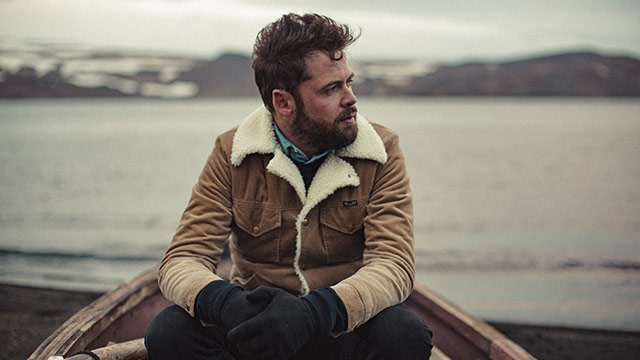

Quem é Passenger?
Michael Rosenberg (mais conhecido como Passenger) é um cantor e compositor Britânico que nasceu em 17 de maio de 1984 em Brighton and Hove.

Michael começou a compor com 14 anos e desde aquela época sabia que queria viver daquilo, por isso, largou a escola no ensino médio para focar em sua banda e começou a tocar nas ruas de Londres, algo que mesmo depois da fama ele ainda faz com frequência, alegando ser:
O que realmente me faz um músico
https://pt.wikipedia.org/wiki/Passenger_(cantor)
Seu projeto começou como uma banda de soft-rock, mas após a separação da banda, Michael decidiu manter o nome antigo (Passenger) e com o tempo migrou para o estilo Folk.
Sua carreira solo começou pequena, até que em 2013 ele lançou seu maior hit até hoje: Let Her Go, permitindo que ele rodasse o mundo e ganhasse o prêmio Ivor Novello
da British Academy
de melhor trabalho do ano de 2014.